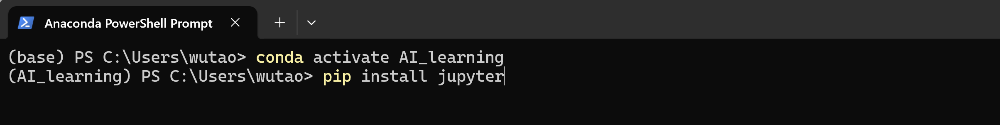

Jupyter Notebook配置
本文贡献者：顾武韬
什么是Jupyter Notebook
Jupyter Notebook 是一款开源的交互式 Web 工具，用于创建包含实时代码、公式、可视化图表和文本说明的文档。其核心是“单元格”概念，允许用户在代码单元（支持 Python 等 40 多种语言）中编写并运行代码，结果会直接显示在下方；同时可在 Markdown 单元中用富文本和公式记录分析过程。这种将代码、结果和叙述文本结合的形式，使其成为数据探索、机器学习、科学计算和教学的理想工具，让整个工作流程如同在讲述一个逻辑清晰的故事。（该内容由deepseek生成）
安装 Notebook
1、进入Anaconda PowerShell Prompt，激活之前创建的conda虚拟环境
2、进入环境后，输入以下代码安装jupyter notebook
| 安装Jupyter | |
|---|---|

启动 Notebook
1、cd进入项目文件夹中
| 进入项目文件夹 | |
|---|---|
2、在项目文件夹下启动jupyter notebook
| 启动Jupyter notebook | |
|---|---|
notebook启动后，等待几秒，会自动跳转到浏览器打开。出现如下界面则成功启动。在页面中可以看到当前项目文件夹下的所有文件，如果没有文件则空白。
基本使用操作
创建新的 Notebook
1、进入我们想存放notebook文件的文件夹中（没有文件夹可以在页面中空白处点击右键选择New Folder新建）
2、点击右上角File，选择New，点击Notebook创建。创建完成后自动跳转打开新建的Notebook。
3、选择python解释器（默认为当前虚拟环境安装的python版本），点击select。这里的python解释器版本与安装jupyter notebook的虚拟环境中所安装的python版本相同，同时在当前虚拟环境中安装的各种python库也可以在Notebook中直接调用。
4、看到如图页面则代表成功创建
单元格操作
单元格类型
代码单元格
输入代码的单元格。可编写、运行和测试代码，并立即查看结果
Markdown单元格
可输入Markdown格式文本，用于添加文本说明
有关Markdown的更多内容见：Markdown基本教程
新建单元格
方法一：点击操作栏中的“+”
方法二：将鼠标移动到已有单元格下方，会显示click to add a cell,点击即可添加
添加新的单元格时，默认为代码单元格。如需添加Markdown单元格，点击到新建的单元格中，点击操作栏右边的Code选项，将其更改为Markdown，此时光标所在的单元格将会变为Markdown单元格

输入代码并运行
在空白的代码单元格中输入
| 测试代码 | |
|---|---|
可执行以下操作：
1、运行当前单元格: Ctrl + Enter
2、运行当前单元格并在下方创建新的单元格：Shift + Enter
输入Markdown并编译
1、新建空白单元格，将单元格类型改为Markdown
2、输入以下内容（#代表一级标题）
| 测试代码 | |
|---|---|
3、Ctrl + Enter或Shift + Enter运行当前单元格，可以看到刚才输入的内容出现格式
4、如需修改，双击生成后的文字单元格即恢复到可输入状态
删除单元格
方法一：点击单元格右侧删除图标
方法二：点击单元格中内容输入框外的空白处（图中箭头所指位置）选择当前单元格，双击"D"键
如果只有一行单元格，删除后会自动新建一行空白的。
在上下方插入新的单元格
方法一：点击单元格右侧图标，左边的为在上方插入，右边的为在下方插入
方法二：选中整个单元格（点击单元格中内容输入框外的空白处），点击"A"键在上方插入，点击"B"键在下方插入
如图在python代码行上下插入新的单元格

上下移动单元格
方法一：点击单元格右侧图标，上箭头为向上移动，下箭头为向下移动
方法二：选中整个单元格（点击单元格中内容输入框外的空白处），点击"Ctrl + Shift + 上键"上移，点击"Ctrl + Shift + 下键”下移
如图选中python代码行对其进行上下移动操作
学会上述步骤，就可以开始用Jupyter Notebook编写和调试代码了！
以上是最基本的操作，其他更多的功能和用法可以在使用的过程中慢慢探索。